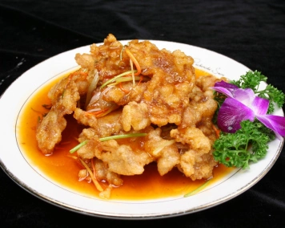
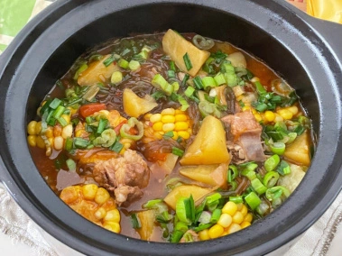
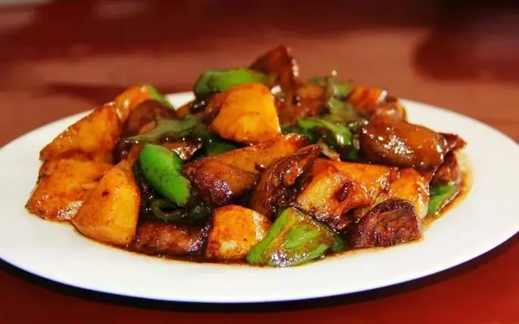
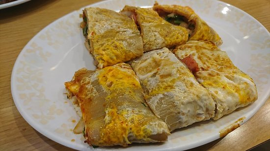
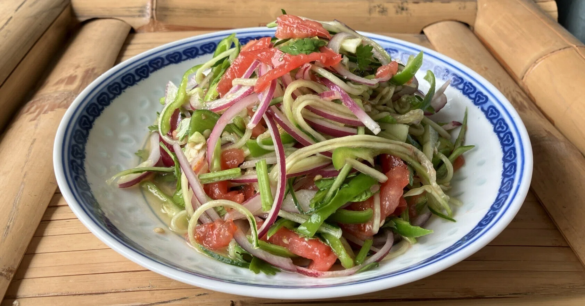
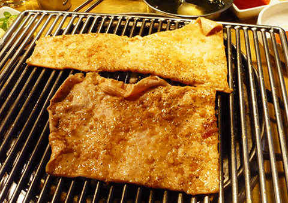

Щедрый мир дунбэйской кухни
Дунбэйская кухня (кухня Северо-Восточного Китая) сформировалась в условиях суровых морозных зим на плодородных чернозёмах. Для неё характерны сытные горячие рагу, квашеная капуста, запечённое мясо и по-настоящему щедрые порции.
Легендарные блюда
Суаньцай (Квашеная пекинская капуста)
Ферментированная капуста с приятной согревающей кислинкой. Незаменимый компонент для наваристых супов со свиной грудинкой и начинок для пельменей.
 Гобаожоу (Хрустящая свинина)
Гобаожоу (Хрустящая свинина)
Тонко нарезанные ломтики нежной свинины в воздушном крахмальном кляре, обжаренные до золотистого хруста и покрытые кисло-сладким соусом.

Дунбэй Луаньдунь (Северо-восточное рагу)Сытное домашнее рагу из свиных рёбрышек, картофеля, стручковой фасоли, кукурузы и баклажанов в густом соевом соусе.

Дисаньсянь (Три дара земли)Классическое блюдо из обжаренного картофеля, баклажанов и сладкого перца в ароматном чесночном соусе.

Лапша Лапи (Дунбэй Да Ла Пи)Широкая прозрачная крахмальная лапша, подаваемая холодной со свежими огурцами, чесноком и кунжутным соусом.
 Танхулу (Ягоды в карамели)
Танхулу (Ягоды в карамели)Ягоды боярышника на бамбуковой палочке в тонкой хрустящей карамельной глазури — главное зимнее сладкое лакомство Севера.
 Басы Дигуа (Батат в тянущейся карамели)
Басы Дигуа (Батат в тянущейся карамели)Кусочки жареного батата в горячей карамели, которая вытягивается в длинные тонкие нити при подаче.

Особенности вкуса дунбэйской кухни
Из-за морозных зим здесь любят сытные, горячие и наваристые блюда с добавлением чеснока, лука и соевой пасты, прекрасно сохраняющие тепло.
История и слияние культур
Дунбэйская кухня соединила традиции императорской кухни последнего императора 溥仪 (Пу И), маньчжурские охотничьи обычаи, корейские холодные закуски и русские кулинарные влияния.
Популярный стритфуд
Каолэнмянь (Жареная холодная лапша)
Листовая лапша, обжаренная на плите с яйцом, зеленью и кисло-сладким соусом — популярнейший стритфуд.

Лаохуцай (Салат «Тигр»)
Острый освежающий салат из свежей кинзы, зелёного жгучего перца и лука с кунжутным маслом.

Жареная свиная кожа на углях
Шашлычки из богатой коллагеном свиной кожи с румяной корочкой, приправленные кумином и чили.
